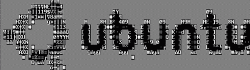
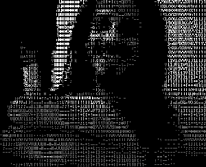

ASCII-Art
Dieser Artikel wurde für die folgenden Ubuntu-Versionen getestet:
Dieser Artikel ist größtenteils für alle Ubuntu-Versionen gültig.
Zum Verständnis dieses Artikels sind folgende Seiten hilfreich:
ASCII-Art bedeutet, Grafik u.ä. nur in Form von ASCII-Zeichen darzustellen, also ohne Pixel bzw. ohne Grafikmodus. In Zeiten der grafischen Benutzeroberflächen ist ASCII-Art etwas in den Hintergrund gerückt, es gibt aber immer noch eine aktive Nutzergemeinschaft. Textdateien, die ASCII-Art enthalten werden häufig mit der Dateiendung .nfo gekennzeichnet und benötigen spezielle Schriftarten und Zeichensätze, damit man ein echtes Bild erkennen kann. Noch besser sieht die Ausgabe auf einer virtuellen Konsole aus, am besten mit hoher Auflösung durch Framebuffer. Für Ubuntu bzw. Linux im allgemeinen gibt es eine Reihe von Programmen, die sich mit ASCII-Art beschäftigen. Diese werden in diesem Artikel kurz vorgestellt.
\|||/
(o o)
,~~~ooO~~(_)~~~~~~~~~,
| Einfaches |
| Beispiel für |
| ASCII-Art |
'~~~~~~~~~~~~~~ooO~~~'
|__|__|
|| ||
ooO Oooaview¶
aview  ist ein Programm, das Pixel-basierte Grafiken in Darstellungen mittels ASCII-Zeichen umwandelt.
ist ein Programm, das Pixel-basierte Grafiken in Darstellungen mittels ASCII-Zeichen umwandelt.
Installation¶
aview ist über die Ubuntu Quellen installierbar [1]:
aview (universe)
 mit apturl
mit apturl
Paketliste zum Kopieren:
sudo apt-get install aview
sudo aptitude install aview
Leider benötigt aview die Grafiken im etwas exotischen .pnm-Format. Um Grafiken in dieses Format umzuwandeln, kann man entweder convert aus dem ImageMagick-Paket verwenden oder es kann, wer grafische Oberflächen bevorzugt, auch XnView einsetzen, welches Grafiken im .pnm-Format speichern kann. Inzwischen gibt es aber auch das Programm asciiview, das im Paket enthalten ist, das Bild automatisch mit Programmen wie NetPBM und ImageMagick umwandelt und an aview weiterleitet.
Benutzung¶
Noch besser sieht die Ausgabe auf einer virtuellen Konsole aus, am besten mit hoher Auflösung durch Framebuffer. Liegt die umzuwandelnde Grafik im .pnm-Format vor, so kann diese relativ einfach mittels aview in ASCII-Art umgewandelt werden, und zwar mit folgendem Befehlsaufruf [1]:
aview BILD.pnm
wobei BILD.pnm natürlich durch den tatsächlichen Bildnamen ersetzt werden muss. Eine "bessere" Darstellung erhält man in der Regel, wenn man zusätzlich die Option -extended verwendet.
aview kennt eine ganze Reihe von Optionen, welche in den Manpages beschrieben sind.
Das Ubuntu-Logo von der Startseite von ubuntu.com sieht in ASCII Art dann so aus:

Natürlich sind die Möglichkeiten von aview zur "schönen" Konvertierung von Bildern eingeschränkt, insbesondere wenn Grafiken mit vielen kleinen Details konvertiert werden.
jp2a¶
jp2a wandelt JPG-Dateien direkt in ASCII-Texte um.
Installation¶
jp2a ist in den offiziellen Paketquellen enthalten:
jp2a (universe)
mit apturl
Paketliste zum Kopieren:
sudo apt-get install jp2a
sudo aptitude install jp2a
Benutzung¶
Das Kommandozeilen-Werkzeug kann Farben verarbeiten, passt sich automatisch an die Breite der Terminalausgabe an und der Text kann z.B. auch im HTML-Format ausgegeben werden, was den Vorteil hat, dass die Ausgabe mit einer sinnvollen Schriftart im Browser angezeigt wird. Weitere Möglichkeiten der Ausgabe verrät die Manpage des Programms.
cowsay¶
Cowsay ist ein kleines Perl-Skript, welches Text in Form einer sprechenden Kuh (als Sprechblase) darstellt.
Installation¶
Folgende Pakete müssen installiert [1] werden:
cowsay (universe)
mit apturl
Paketliste zum Kopieren:
sudo apt-get install cowsay
sudo aptitude install cowsay
Benutzung¶
Die Syntax von cowsay ist sehr simpel [2]:
cowsay <Optionen> Text
"Text" ist dabei der Text, den die Kuh "sagen" soll. Mit den Optionen kann das Aussehen oder der Gemütszustand der Kuh variiert werden.
Eine Ausgabe sähe dann z.B. so aus:
cowsay Hallo Welt
____________
< Hallo Welt >
------------
\ ^__^
\ (oo)\_______
(__)\ )\/\
||----w |
|| ||Ein Liste der Optionen findet man in den Manpages zu cowsay.
An dieser Stelle sei nur die Option -f explizit erwähnt, da man mit ihr das Aussehen der Kuh ändern kann, z.B. in Tux, den Linux-Pinguin:
cowsay -f tux Ubuntu ist toll!
ergibt folgende Ausgabe:
__________________
< Ubuntu ist toll! >
------------------
\
\
.--.
|o_o |
|:_/ |
// \ \
(| | )
/'\_ _/`\
\___)=(___/
Die entsprechenden Bilder sind alle im Verzeichnis /usr/share/cowsay/cows hinterlegt. Der Option -l zeigt die verfügbaren Schlüsselwörter.
AAlib/Libcaca mit MPlayer¶
Die AAlib ist eine Bibliothek, die es Anwendungen erlaubt, bewegte Bilder in ASCII-Art zu konvertieren. In MPlayer ist die Funktion schon integriert. Dadurch ist es möglich Videos monochrom auf der Konsole zu betrachten. Libcaca ermöglicht auch die Umwandlung in ASCII-Art, aber gestaltet das Videobild farbig. Leider stellt es die Bilder nicht so detailliert da wie die AAlib.
Installation¶
Die AAlib ist fester Bestandteil der Installation.
Benutzung¶
Die Syntax um ein Video mit AAlib zu öffnen ist folgende [2]:
mplayer -vo aa video.avi
Möchte man die Auflösung des Videos ändern, so ist folgender Aufruf nötig:
mplayer -vo aa:width=250:height=80 video.avi
Dieses erzeugt ein Fenster in dem das Video mit einer Auflösung von 250*80 Zeichen dargestellt wird.
Um ein Video mit Libcaca zu öffnen, lautet die Syntax:
mplayer -vo caca video.avi
figlet¶
Figlet ist ein kleines Programm, das aus einem vorzugebenden Text per ASCII-Art eine große, bannerartige Schrift erzeugt.
Installation¶
Das Programm kann aus den Paketquellen von Ubuntu installiert werden. Dazu muss nur das Paket
figlet (multiverse)
mit apturl
Paketliste zum Kopieren:
sudo apt-get install figlet
sudo aptitude install figlet
installiert [1] werden.
Wer möchte kann stattdessen (oder zusätzlich) auch die figlet-Alternative toilet installieren, die z.B. auch Farbausgabe und den Export in verschiedene Formate wie SVG und HTML unterstützt.
toilet (universe)
mit apturl
Paketliste zum Kopieren:
sudo apt-get install toilet
sudo aptitude install toilet
Weitere Schriften¶
Figlet nutzt eine Reihe von Schriften. Viele werden schon bei der Installation von Figlet mitinstalliert. Auf figlet.org findet man noch eine Reihe weiterer Schriftarten zum Download. Damit Figlet diese Schriften nutzen kann, müssen die heruntergeladenen .flf-Dateien mit Root-Rechten in das Verzeichnis /usr/share/figlet kopiert werden.
Benutzung¶
Jetzt kann man Figlet in einem Terminal aufrufen [1]. Die Ausgabe von figlet erfolgt standardmäßig auf stdout, also in der Regel auf den Bildschirm:
figlet ubuntuusers.de
erzeugt folgende Ausgabe:
_ _ _ _ _| |__ _ _ _ __ | |_ _ _ _ _ ___ ___ _ __ ___ __| | ___ | | | | '_ \| | | | '_ \| __| | | | | | / __|/ _ \ '__/ __| / _` |/ _ \ | |_| | |_) | |_| | | | | |_| |_| | |_| \__ \ __/ | \__ \| (_| | __/ \__,_|_.__/ \__,_|_| |_|\__|\__,_|\__,_|___/\___|_| |___(_)__,_|\___|
Möchte man eine andere Schrift als die Standardschrift verwenden, so fügt man die Option -f Schriftname hinzu. Natürlich kann man die Ausgabe auch umleiten, um das Ergebnis z.B. in eine Datei zu speichern.
Figlet kennt eine Reihe weiterer Optionen, welche in den Manpages oder im Internet auf der Projektseite aufgeführt sind.
bb¶
bb ist eine sehr eindrucksvolle Video-Demo der Möglichkeiten von AAlib
HasciiCam¶
 Hasciicam stellt den Input von Webcams oder TV-Karten als ASCII-Art da. Es ist durch die geringe Datenmenge auch möglich, die Ausgabe auf einer Website, die in bestimmten Zeitabständen aktualisiert wird anzuzeigen. HasciiCam nutzt ebenfalls die AA-lib.
JavE¶
JavE  ist ein freier ASCII-Editor. Er ist für die einfache Erstellung von Diagrammen mit ASCII-Zeichen konzipiert. Er verhält sich wie ein Grafik-Editor zum Bearbeiten von Texten anstatt von Bildern. JavE wurde zu 100% in Java geschrieben und wurde mit Windows 98 und neuer, Mac OS X, Solaris und Linux bis einschließlich Java 7 erfolgreich getestet.
ist ein freier ASCII-Editor. Er ist für die einfache Erstellung von Diagrammen mit ASCII-Zeichen konzipiert. Er verhält sich wie ein Grafik-Editor zum Bearbeiten von Texten anstatt von Bildern. JavE wurde zu 100% in Java geschrieben und wurde mit Windows 98 und neuer, Mac OS X, Solaris und Linux bis einschließlich Java 7 erfolgreich getestet.
Funktionen:
Freihandmalen mit der Maus
FIGlet-Unterstützung - ca. 200 Schriften (separater Download)
GIF/JPG/BMP nach ASCII-Konvertierung mit vielen Optionen
Crash Recovery - bearbeitete Dokumente können beim nächsten Start von JavE wiederhergestellt werden
Formauswahlwerkzeug
Einfache Textbox Editierung (Grenzen, Bewegen, Maßstab neu setzen)
Erweiterbare Clipart-Bibliothek
Export für viele Zwecke (HTML, Java/C++/C/... Kommentarre)
Bewegen/Kopieren/Spiegeln/Drehen/...
Und vieles viele mehr - ausprobieren!
Praktisch das Gegenstück zu JavE ist das ebenfalls Java-basierte ditaa , das die erstellten Textdiagramme wieder in PNG-Grafiken oder in eine HTML-Seite umwandelt.
Installation¶
Das Programm benötigt eine Java-Laufzeitzeitgebung (JRE). Wie man eine solche installiert, ist im Artikel Java/Installation beschrieben.
Nach dem Herunterladen von jave5.zip  entpackt man die Archivdatei in einen eigenen Ordner. Dabei darauf achten, dass der Ordnername keine Leerzeichen enthält und die Ordnerstruktur des Archivs erhalten bleibt.
entpackt man die Archivdatei in einen eigenen Ordner. Dabei darauf achten, dass der Ordnername keine Leerzeichen enthält und die Ordnerstruktur des Archivs erhalten bleibt.
Benutzung¶
JavE kann anschließend mit folgendem Befehl in einem Terminalfenster ausgeführt werden:
java -jar /PFAD/ZUR/jave5.jar
Abschließend noch ein kleines Beispiel von der Homepage. Weitere Informationen liefern die Dokumentation und die FAQ zu JavE.
_____________________________________
,' -> create Ascii art `.
/ -> draw sketches for e-mails \
| -> comment source code of programs |
| -> diagrams for visually handicaped people |
\ -> ... /
`._______ _____________________________,'
/,'
O /'
/|-
/|Links¶
Cowsay - Wikipedia Eintrag zu cowsay
Cowsay-Wiki
- relativ ausführliche Beschreibung von cowsay ascii-art.de -
eine sehr umfangreiche ASCII-Art-SammlungTetradraw
- ANSI-Art-Editorcmatrix - ein Text-Bildschirmschoner für die Konsole
- Erstellt mit Inyoka
-
 2004 – 2017 ubuntuusers.de • Einige Rechte vorbehalten
2004 – 2017 ubuntuusers.de • Einige Rechte vorbehalten
Lizenz • Kontakt • Datenschutz • Impressum • Serverstatus -
Serverhousing gespendet von